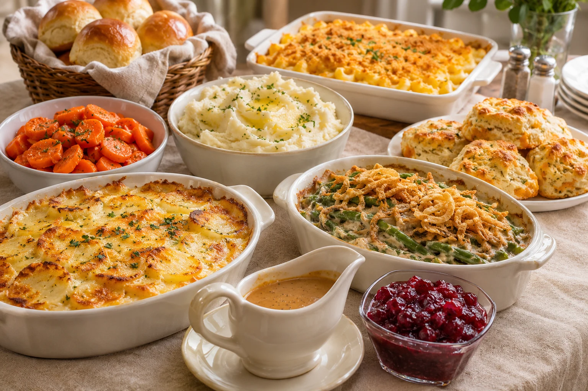
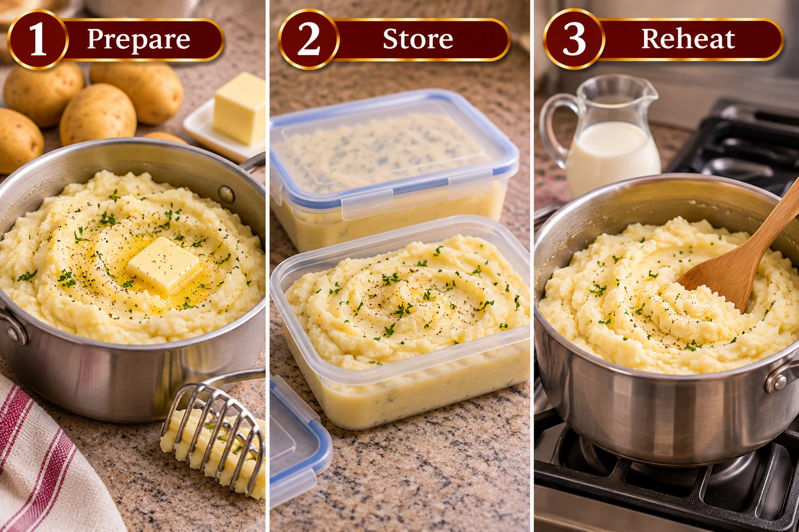
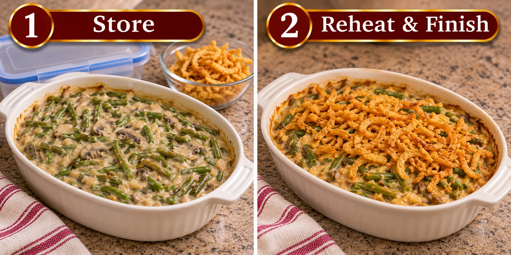
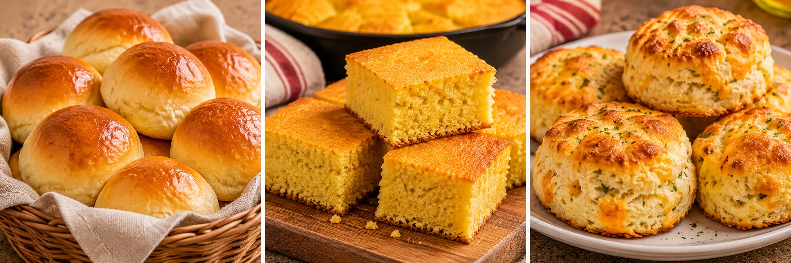
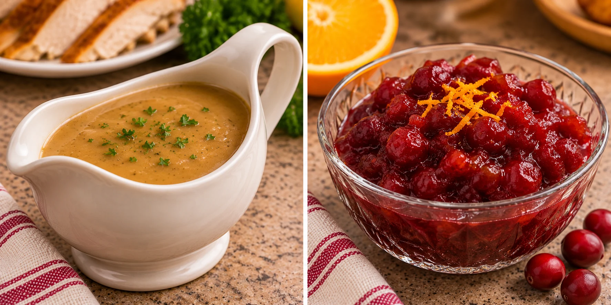
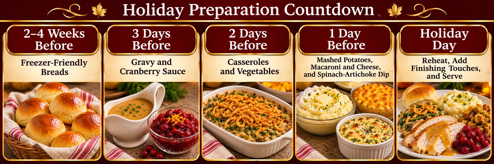

15 Holiday Dishes You Can Prepare Ahead of Time
Spend less time cooking on the holiday and more time enjoying it.

Preparing a holiday dinner does not have to mean spending the entire day in the kitchen. Between cooking the main course, setting the table and welcoming guests, oven space and time disappear quickly. Many favorite sides, breads, sauces and appetizers can be fully cooked before the celebration. On the holiday, they only need reheating, serving or a quick finishing touch.
Whether you are planning Thanksgiving, Christmas, Easter or another gathering, these 15 dishes help spread the work over several days. The preparation windows below prioritize convenience and quality; follow recipe-specific storage directions where they are stricter.
Quick Guide: 15 Make-Ahead Dishes
| Dish | Prepare ahead | Reheating method | Approx. time |
|---|---|---|---|
| Creamy mashed potatoes | 1–2 days | Stovetop, low–medium | 15–25 min |
| Scalloped potatoes | 1–2 days | Covered oven, 325°F | 30–50 min |
| Sweet potato casserole | 1–2 days | Covered oven, 325°F | 25–40 min |
| Green bean casserole | 1 day | Covered oven, 325°F | 25–40 min |
| Broccoli and cheese casserole | 1–2 days | Covered oven, 325°F | 25–40 min |
| Glazed carrots | 1–2 days | Stovetop, medium–low | 10–15 min |
| Creamed spinach | 1–2 days | Stovetop, medium–low | 10–15 min |
| Baked macaroni and cheese | 1 day | Covered oven, 325°F | 25–40 min |
| Baked beans | 1–2 days | Stovetop, medium–low | 15–25 min |
| Homemade dinner rolls | 1–2 days or freeze | Oven, 325°F | 5–10 min |
| Cornbread | 1–2 days or freeze | Covered oven, 325°F | 10–15 min |
| Cheddar biscuits | 1 day or freeze | Oven, 325°F | 5–10 min |
| Turkey gravy | 1–3 days | Stovetop; bring to boil | 5–15 min |
| Cranberry sauce | 2–3 days | Serve chilled | No reheating |
| Spinach and artichoke dip | 1–2 days | Covered oven, 325°F | 20–35 min |
Reheating times are estimates for typical refrigerated portions. Actual time depends on quantity, dish depth, starting temperature and appliance. Use a thermometer: reheated perishable cooked dishes should reach 165°F throughout, and gravy should be brought to a boil. Plain breads are generally warmed for texture rather than treated as leftovers requiring reheating to 165°F.
Classic Holiday Side Dishes
1. Creamy Mashed Potatoes
Make ahead: 1–2 days
How to prepare ahead
Cook potatoes until tender; mash with butter, milk or cream and season to taste. Divide large batches into shallow containers and refrigerate promptly.
On the holiday
Reheat in a covered saucepan over low to medium-low heat for about 15–25 minutes, stirring periodically. Add warm milk, cream or butter as needed and heat to 165°F.
Helpful tip: Potatoes thicken in the refrigerator; add liquid gradually and avoid vigorous mixing.

2. Scalloped Potatoes
Make ahead: 1–2 days
How to prepare ahead
Bake until potatoes are tender and the sauce is thickened. Cool promptly, dividing a deep batch into shallow containers if necessary; refrigerate.
On the holiday
Reheat covered at 325°F for approximately 30–50 minutes, until the center reaches 165°F. Uncover briefly for browning if desired.
Helpful tip: A deep or family-size pan may need substantially longer; a splash of milk can loosen a thick sauce.
3. Sweet Potato Casserole
Make ahead: 1–2 days
How to prepare ahead
Prepare the filling, assemble and bake until fully cooked. Cool promptly and refrigerate covered.
On the holiday
Reheat covered at 325°F for approximately 25–40 minutes, until 165°F in the center. Add or refresh marshmallows or crunchy topping near the end.
Helpful tip: Keep delicate toppings separate if you want the best texture.
4. Green Bean Casserole
Make ahead: 1 day
How to prepare ahead
Prepare and fully bake the casserole, then cool promptly and refrigerate. Reserve extra crispy onions separately.
On the holiday
Reheat covered at 325°F for approximately 25–40 minutes, until 165°F in the center. Add fresh crispy onions during the final few minutes.
Helpful tip: A quick fresh topping restores crunch without changing the make-ahead method.

5. Broccoli and Cheese Casserole
Make ahead: 1–2 days
How to prepare ahead
Prepare the broccoli and cheese sauce, assemble and fully bake. Cool promptly and refrigerate.
On the holiday
Reheat covered at 325°F for approximately 25–40 minutes, until 165°F in the center. Uncover briefly to refresh the top.
Helpful tip: Avoid overcooking broccoli during the initial bake so it retains some texture.
6. Glazed Carrots
Make ahead: 1–2 days
How to prepare ahead
Cook carrots until tender but not mushy; toss in the finished butter, honey, maple or brown-sugar glaze. Cool promptly and refrigerate.
On the holiday
Reheat on the stovetop over medium-low heat for approximately 10–15 minutes, stirring gently, until 165°F. Add a splash of water if the glaze is too thick.
Helpful tip: Slightly firm carrots hold up best when reheated.
7. Creamed Spinach
Make ahead: 1–2 days
How to prepare ahead
Cook spinach, remove excess moisture and combine with cream sauce and seasonings. Finish cooking, cool promptly and refrigerate.
On the holiday
Reheat over low to medium-low heat for approximately 10–15 minutes, stirring often, until 165°F. Thin with a little milk or cream if needed.
Helpful tip: Squeezing excess moisture from spinach prevents a watery sauce.
8. Baked Macaroni and Cheese
Make ahead: 1 day
How to prepare ahead
Cook pasta just until tender, combine with generous cheese sauce and bake fully. Cool promptly and refrigerate.
On the holiday
Add a little milk if dry; reheat covered at 325°F for approximately 25–40 minutes, until the center reaches 165°F. Uncover briefly for a browned top.
Helpful tip: Creamier recipes generally tolerate reheating better than dry baked versions.
9. Baked Beans
Make ahead: 1–2 days
How to prepare ahead
Cook beans completely with their sauce and seasonings. Divide into shallow containers, cool promptly and refrigerate.
On the holiday
Reheat on the stovetop over medium-low heat for approximately 15–25 minutes, stirring periodically, until 165°F. Add a splash of water if thick.
Helpful tip: To serve in a slow cooker, reheat safely first, then transfer to a preheated cooker for hot holding.
Homemade Breads You Can Bake Ahead
10. Homemade Dinner Rolls
Make ahead: 1–2 days or freeze
How to prepare ahead
Bake fully, cool completely and package airtight. Freeze if preparing well ahead; follow recipe guidance for perishable fillings.
On the holiday
Warm in a 325°F oven for approximately 5–10 minutes, loosely covered if needed. Thaw frozen rolls according to the recipe first.
Helpful tip: Brush with melted butter just before serving.
11. Cornbread
Make ahead: 1–2 days or freeze
How to prepare ahead
Bake fully, cool completely and wrap tightly. Freeze for longer storage, or store as directed by the recipe.
On the holiday
Warm covered in a 325°F oven for approximately 10–15 minutes, or serve at room temperature when appropriate.
Helpful tip: Keep covered to reduce drying.
12. Cheddar Biscuits
Make ahead: 1 day or freeze
How to prepare ahead
Bake fully, cool and package airtight. Refrigerate or freeze as appropriate for the recipe and ingredients.
On the holiday
Warm in a 325°F oven for approximately 5–10 minutes. Brush with melted herb or garlic butter after warming.
Helpful tip: Freezing baked biscuits makes it easy to prepare them well before a holiday.

Holiday Sauces You Can Prepare Ahead
13. Turkey Gravy
Make ahead: 1–3 days
How to prepare ahead
Make a gravy base with turkey stock or broth, fat, flour and seasonings. Cook fully, cool promptly in shallow containers and refrigerate.
On the holiday
Reheat on the stovetop for approximately 5–15 minutes, stirring and bringing the gravy to a full boil. Thin with broth if necessary.
Helpful tip: Fresh turkey drippings can be stirred in later if properly handled; bring gravy back to a boil.
14. Cranberry Sauce
Make ahead: 2–3 days
How to prepare ahead
Simmer cranberries with sugar, liquid and desired flavorings until the berries burst and the sauce thickens. Cool promptly and refrigerate covered.
On the holiday
No reheating required: serve chilled, or warm gently if preferred.
Helpful tip: Cranberry sauce thickens as it cools.

Make-Ahead Holiday Appetizer
15. Spinach and Artichoke Dip
Make ahead: 1–2 days
How to prepare ahead
Drain spinach and artichokes well, combine with the dairy and cheese ingredients, then bake fully. Cool promptly and refrigerate.
On the holiday
Reheat covered at 325°F for approximately 20–35 minutes, until the center reaches 165°F. Stir if appropriate and serve with bread, crackers or vegetables.
Helpful tip: Add a little milk if the dip has become too thick.
Your Holiday Make-Ahead Cooking Timeline
2–4 weeks before
Bake and freeze dinner rolls, cornbread and cheddar biscuits in airtight packaging.
3 days before
Prepare cranberry sauce and turkey gravy; check refrigerator space.
2 days before
Prepare scalloped potatoes, glazed carrots, creamed spinach, baked beans and broccoli-and-cheese casserole.
1 day before
Finish mashed potatoes, sweet potato casserole, green bean casserole, baked macaroni and cheese, and spinach-and-artichoke dip.
Holiday day
Start with the largest casseroles. Reheat stovetop dishes as oven space allows, boil gravy, warm breads last, and add quick toppings just before serving.

Tips for Reheating Several Holiday Dishes
Start with the longest dishes
Deep casseroles generally need more time than small portions. Build the schedule around their actual temperatures, not a fixed clock.
Keep casseroles covered
Foil helps retain moisture; uncover or add crispy toppings near the end.
Use the stovetop
Potatoes, carrots, spinach, beans and gravy can free oven space for casseroles.
Warm breads near serving
Rolls, cornbread and biscuits take less time and are best warmed last.
Check temperatures
Use a thermometer to verify 165°F in reheated perishable cooked dishes; bring gravy to a boil.
Food Safety When Cooking Ahead
• Refrigerate perishable cooked foods within two hours, or within one hour when the surrounding temperature exceeds 90°F.
• Divide large amounts of food into shallow containers for prompt cooling. Do not leave a deep casserole on the counter for hours.
• Keep refrigerators at 40°F or below and freezers at 0°F or below.
• Properly refrigerated cooked leftovers generally keep 3–4 days; follow shorter recipe-specific instructions where applicable.
• Reheat perishable cooked dishes to 165°F throughout and bring gravies to a boil. Set the oven to at least 325°F for reheating.
• Do not reheat refrigerated leftovers in a slow cooker. Reheat thoroughly by stovetop, oven or microwave first, then transfer to a preheated slow cooker for holding at 140°F or above.
• Thaw frozen perishable foods in the refrigerator or by another approved method, not for extended periods on the counter.
Free Printable Holiday Make-Ahead Planner
The companion four-page planner includes all 15 dishes, a preparation countdown, a customizable reheating schedule and a quick-reference chart with methods, temperatures and approximate times.
Enjoy More of the Holiday and Less Time in the Kitchen
You do not have to make all 15 dishes. Even preparing three or four favorites early can free up time for the main course and guests. Choose foods that reheat well, use the freezer when practical and build a plan around the dishes your family enjoys most.